10 Отчеты и решения уязвимостей¶
Примечание
В этой главе описаны все возможные опции меню.
Однако не все модели устройств используют все эти параметры меню. обзор модели Предоставляет информацию о том, доступна ли конкретная функция в используемой модели устройства.
Результаты суммируются в отчете. Отчеты можно отображать на веб-интерфейсе и скачивать в разных форматах.
Устройство сохраняет все отчеты обо всех кабелях в локальной базе данных. Сохраняется не только последний отчет о сканировании, но и все отчеты обо всех когда-либо выполненных операциях. Это позволяет получить доступ к информации из прошлого. Отчеты содержат обнаруженные уязвимости и информацию о сканировании.
После запуска программы можно просмотреть отчет о найденных на данный момент нарушениях. После завершения лечения состояния изменений на Сделанный и большего результата не будет.
10.1 Настройка и управление формами отчетов¶
Форматы представляют собой экономические формы, на основе которых создается отчет на основе результатов. Многие формы приводят к уменьшению количества доступных данных, чтобы отобразить их осмысленным образом.
Форматы отчетов можно использовать для экспорта информационных отчетов в других форматах документов, чтобы их можно было обрабатывать другими внешними приложениями (коннекторами).
Имя экспортируемого отчета можно настроить для обеспечения пользователя (см. главу 7.7).
Собственный формат XML-устройства содержит все данные и может использоваться для импорта экспортных отчетов на другое устройство. Для этого создайте задачу импорта (см. главу 9.5).
10.1.1 Форматы отчетов по умолчанию¶
Все форматы отчетов по факту «Ак Шумкар» представляют собой объекты данных, которые подлежат нарушению через фид. Они загружаются и обновляются при каждом обновлении канала.
Примечание
Формат отчетов может быть конфиденциальным. Они отмечены значком (Устарело) в веб-интерфейсе и многое другое не документировано в следующем списке.
Устаревшие форматы отчетов больше использовать нельзя. Если отчет экспортируется в таком формате, загруженный файл может быть пустым или по каким-либо причинам непригоден для использования.
Если форматы отчетов по умолчанию отключены, возможно позднее обновление канала или установка владельцем импорта канала (см. главу) 6.2.1.10.1).
Форматы отчета по умолчанию нельзя. Кроме того, их может удалить только временный владелец-импортер фида или суперадминистратор. При следующем обновлении фида они будут загружены снова.
Примечание
Чтобы удалить отчет по умолчанию, владелец-импортёр Фида должен удалить его. После этого владельцу необходимо изменить импорт фида на (Не установлено) (см. главу 6.2.1.10.1).
По умолчанию доступны следующие форматы отчетов:
- Анонимный XML
Это анонимная версия в формате XML. IP-адреса для смены случайных IP-адресов.
- АРФ: Формат независимости в активах v1.0.0
Настоящая форма представляет собой отчет, соответствующий стандарту деятельности NIST в Соединенном Королевстве.
- CPE — CSV-таблица перечисления базовых платформ
В этом отчете выбираются все таблицы CPE и создается один файл с разделенными запятыми.
- CSV-хосты
В этом отчете создается файл, разделенный запятыми, автономно обнаруженные системы.
- Результаты CSV
В этом отчете создается файл с результатом преобразования, разделенными запятыми.
- GCR PDF – Отчет о соответствии «Ак Шумкар»
Это полный отчет о соответствии «Ак Шумкар» по аудиту соответствия (см. главу) 11.2) со всеми уязвимостями в графическом формате в формате PDF-файла. Язык отчета – английский.
- GSR HTML – Отчет о безопасности Ак Шумкар
Это полный отчет о безопасности Ак-Шумкара со всеми уязвимостями и последствиями. Его можно открыть с помощью веб-браузера, в котором должен быть включен JavaScript. Он содержит различные алгоритмы сортировки, уникальные из веб-интерфейса. Язык отчета – английский.
- GSR PDF – Отчет по безопасности Ак Шумкара
Это полный отчет о безопасности «Ак Шумкар» со всеми уязвимостями в графическом формате в виде PDF-файла. График топологии не включается, если в отчете зафиксировано более 100 хостов. Язык отчета – английский.
- GXCR PDF – Отчет руководства «Ак Шумкар» в соответствии с требованиями
Это сокращенный отчет о соответствии «Ак Шумкар» для соответствия аудита (см. главу 11.2) со всеми уязвимостями в графическом формате в виде PDF-файла для управления. Язык отчета – английский.
- GXR PDF – Исполнительный отчет «Ак Шумкар»
Это сокращенный отчет о безопасности «Ак Шумкар» со всеми уязвимостями в графическом формате в виде PDF-файла для управления. График топологии не включается, если в отчете зафиксировано более 100 хостов. Язык отчета – английский.
- Латекс
Этот отчет приводится в виде исходного текста в формате LaTeX. Язык отчета – английский.
- НБЕ
Это старый формат отчета Ак-Шумкар/Нессус. В нем нет поддержки заметок, переопределений и некоторой дополнительной информации.
Это полный отчет в формате PDF. Как и формат HTML, он нейтрален. Язык отчета – английский.
- Карта ТЛС
Это формат отчета для TLS Map (см. главу) 11.6).
- Топология SVG
Результаты результатов в видеоизображении SVG.
- ТЕКСТ
Это создает текстовый файл. Этот формат особенно используется при отправке по электронной почте. Язык отчета – английский.
- Веринице ИСМ
Создает импортный файл для инструмента ISMS. Веринис (см. главу 17.1).
- Веринице ISM все результаты
Создает импортный файл для инструмента ISMS. Веринис (см. главу 17.1).
- Веринице ITG (устарело)
Создает импортный файл для инструмента ISMS. Веринис (см. главу 17.1).
- HTML-отчет об уязвимостях (рекомендуется)
Это новый полный отчет о безопасности «Ак Шумкар» с учетом всех уязвимостей и условий. Его можно открыть с помощью веб-браузера или средства просмотра HTML. Язык отчета – английский.
- Отчет об уязвимостях PDF (рекомендуется)
Это новый полный отчет о безопасности «Ак Шумкар» со всеми уязвимостями в графическом формате в виде PDF-файла. Язык отчета – английский.
Отчеты этой формы ограничены сначала 500 результатами для каждого хоста. После того, как результаты для каждого хоста будут исключены, на главной странице отчета будет показано предупреждение.
- XML
Отчетность по экспорту ведется в отдельном формате XML. В отличие от других форм, этот формат содержит все результаты и не форматирует их вообще.
10.1.2 Управление формами отчетов¶
Страница списка
Все изменения формы результатов можно отобразить, выбрав Конфигурация > Форматы отчетов в меню.
Для всех форматов отчетов отображается следующая информация:
- Имя
Название формирующего отчета.
- Расширение
Имя файла загруженного отчета состоит из UUID (уникального внутреннего идентификатора отчета) и этого расширения. Кроме того, расширение позволяет браузеру запускать совместимое приложение, если указанный тип контента не распознан.
- Тип контента
Тип содержания определяет форму и представляет при представлении. Благодаря этому совместимое приложение можно запустить в браузере.
Кроме того, внутри важен тип контента: он используется для предложений подключаемых модулей в своем десятилетии. Например, при отправке отчета по почте все плагины типа
текст/\*обеспечены, поскольку их можно встроить в электронное письмо в удобочитаемой форме.- Доверять
Некоторые формы выводят только преобразующие данные, тогда как другие выполняют более сложные операции, а также запускают программы. Во избежание злоупотреблений каждый плагин формы отчета должен быть подписан цифровой подписью «Ак Шумкар». Цифровые воздействия через AK-SHUMKAR ENTERPRISE FEED. Если подпись аутентична и издатель гарантирует надежность, это гарантирует, что формат отчета существует именно в том формате, который сертифицирован издателем. Проверка достоверности происходит автоматически, и результат можно увидеть в столбце Доверие (последняя проверка).
- Активный
Форматы отчетов доступны в соответствующих меню, выбираемых только в том случае, если они активированы. Новые импортированные форматы всегда сначала деактивируются. Формат отчета можно активировать только в том случае, если ему доверяют.
Для всех форматов отчетов доступны следующие действия:
 Переместите формат отчета в корзину. Пока отчет не удален из корзины, он не будет загружен заново при следующем обновлении фида.
Переместите формат отчета в корзину. Пока отчет не удален из корзины, он не будет загружен заново при следующем обновлении фида. Отредактируйте формат отчета. Редактировать можно только самостоятельно созданные форматы статей.
Отредактируйте формат отчета. Редактировать можно только самостоятельно созданные форматы статей.
Примечание
Нажав под списком форматов отчетов можно одновременно переместить в корзину несколько форматов отчетов. Раскрывающийся список используется для выбора форматов отчетов, которые следует поместить в корзину.
Страница раскрыта
Нажмите на название формы отчета, чтобы отобразить подробную информацию о форме отчета.
Нажмите  Чтобы открыть страницу, опишите формат отчета.
Чтобы открыть страницу, опишите формат отчета.
В левом верхнем углу пульта доступны следующие действия:
 Ознакомьтесь с соответствующим главой руководства пользователя.
Ознакомьтесь с соответствующим главой руководства пользователя. Показать страницу со списком всех форматов отчетов.
Показать страницу со списком всех форматов отчетов. добавить новый формат отчета (см. главу 10.1.3).
добавить новый формат отчета (см. главу 10.1.3).- Отредактируйте формат отчета. Редактировать можно только самостоятельно созданные форматы статей.
 Переместите формат отчета в корзину. Пока отчет не удален из корзины, он не будет загружен заново при следующем обновлении фида.
Переместите формат отчета в корзину. Пока отчет не удален из корзины, он не будет загружен заново при следующем обновлении фида.
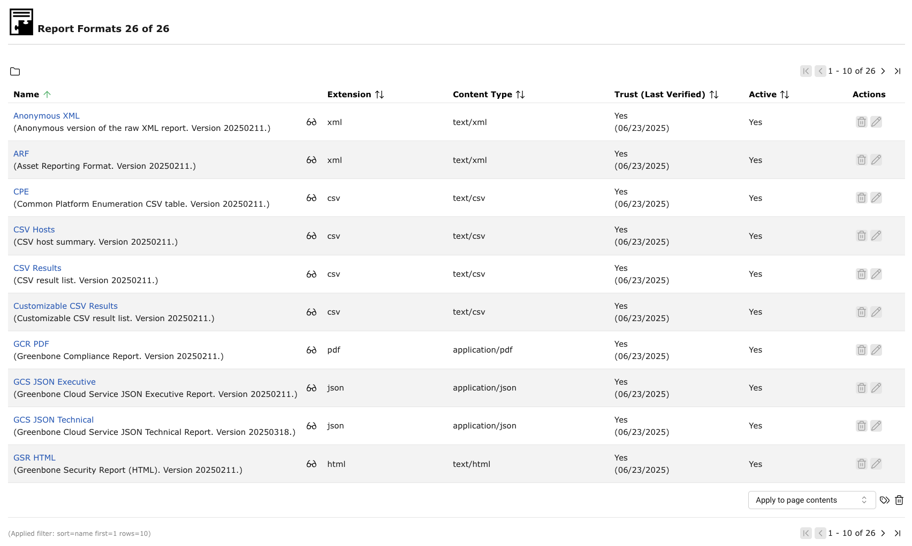
Рис. 10.1 Страница Форматы отчета использование всех доступных форматов отчетов¶
10.1.3 Добавление формы отчета¶
Примечание
Во избежание злоупотреблений все дополнительные импортированные формы отчетов должны быть проверены и подписаны цифровой подписью «Ак Шумкар». Форматы отчетов, не подписанные Ак Шумкаром, не упоминаются в ГОС и не могут быть использованы.
Для получения дополнительной информации см. главу 10.1.2 – Доверять.
Новый формат отчета можно импортировать следующим образом:
Предоставьте или предоставьте плагин формы отчета, который был проверен и принят «Ак Шумкар».
Выбирать Конфигурация > Форматы отчетов в меню.
Нажмите Просмотреть… и выберите «Подключить форму отчета» (см. Рис. 10.2).
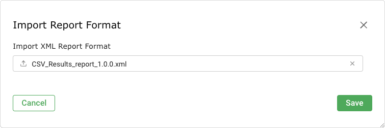
Рис. 10.2 Импортировать плагин формы отчета¶
Нажмите Сохранять.
→ Формат импортированного отчета отображается на странице Форматы отчета.
В строке формирования отчета нажмите кнопку
.Для Активный выберите переключатель Да (видеть Рис. 10.3).
Нажмите Сохранять.
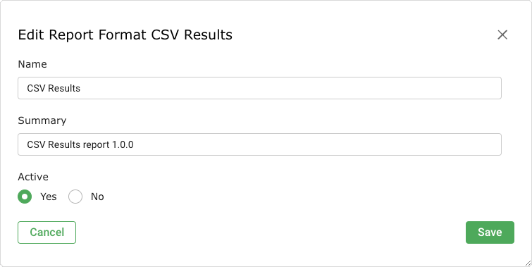
Рис. 10.3 Активация нового формирования отчета¶
10.1.4 Настройка форматов отчетов с помощью конфигураций отчетов¶
Некоторые форматы отчетов можно изменить в соответствии с индивидуальными требованиями:
Настраиваемые результаты CSV
Топология SVG
Веринице ИСМ
Веринице ISM все результаты
Формат отчета можно настроить следующим образом:
Выбирать Конфигурация > Отчет о конфигурации в меню.
создать отчет о конфигурации, нажать новую кнопку
.Определите отчет о конфигурации (см. Рис. 10.4).
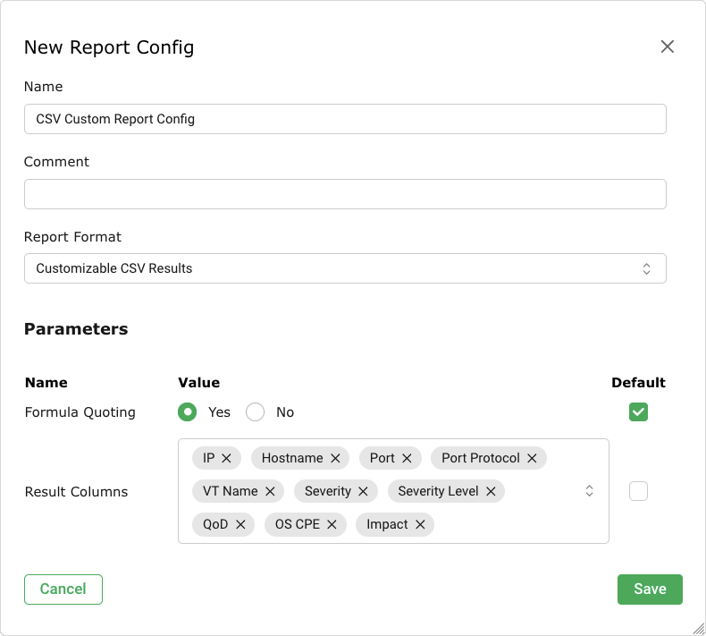
Рис. 10.4 Составление нового отчета о конфигурации¶
Нажмите Сохранять.
Можно быть уверенным в составлении отчета:
- Имя
Определение имени. Имя можно выбрать произвольно.
- Комментарий
Необязательный комментарий может оставить дополнительную информацию.
- Формат отчета
Выбор формирования отчета для настройки.
Настраиваемые параметры зависят от формы отчета.
Примечание
Каждую заводскую настройку можно восстановить до значений, активированных соответствующим образом. По умолчанию флажок. Сброс к настройкам по умолчанию только при сохранении отчета конфигурации, а не при активации флажка.
Настраиваемые результаты CSV
- Формула цитирования
Выбор, следует интерпретировать таблицы критериев как формулы в Microsoft Excel.
Да: Культура не интерпретируется как формула при добавлении.
'в начале каждой записи, которая начинается с=,@,+или-.Нет: Настойчивость интерпретируется как формула.
Значение по умолчанию: Да.
- Столбцы результатов
Выбор столбцов, которые следует включить в CSV-файл. По умолчанию столбцы ИП, Имя хоста, Порт, Протокол порта, Имя ВТ, Серьезность и Уровень серьезности включен.
Должен быть выбран хотя бы один столбец.
Топология SVG
- Тип графики
Выбор макета графики. Макет по умолчанию двапи.
цирк: круговая компоновка, в которой узлы двусвязных компонентов нарисованы на окружности.
точка: иерархическая компоновка с ориентированными графами.
двапи: радиальная компоновка, при которой узлы действуют на концентрических кругах в зависимости от их расстояния от заданного корневого узла.
- Расстояние до узла
Определение расстояния между узлами топологии графа.
Расстояние до узла должно быть целым числом между
1и20. Значение по умолчанию:8. Если введено число вне допустимого параметра, значение задается следующим образом:При входе
0и сохранение, необходимое условие8.При вводе отрицательных чисел и сохранении значения предусмотренных условий
1.При вводе числа большего, чем
20и сохранение, необходимое условие20.
Веринице ИСМ/Веринице ISM все результаты
- Прикрепленные формы отчетов
Выбор формы отчета о сканировании, который импортируется в Веринице. Можно выбрать несколько форматов отчетов.
По умолчанию формат отчета не выбран.
- Описание управления ISM
Определение текста, прикрепленного к отчету, импортируемому в Verinice. Поле поддерживает большинство символов UTF-8, поэтому его также можно оставить пустым.
10.1.5 Управление составами отчетов¶
Страница списка
Все составляющие заключения можно отобразить, выбрав Конфигурация > Отчет о конфигурации в меню.
Для всех конфигураций в отчете отображается следующая информация:
- Имя
Название отчета.
- Формат отчета
Формат отчета, к которому применяются изменения.
Для всех конфигураций доступны следующие действия:
- Переместите отчет о конфигурации в корзину.
- Отредактируйте отчет о конфигурации.
 Клонируйте отчет о конфигурации.
Клонируйте отчет о конфигурации. Экспортируйте отчет о конфигурации в виде XML-файла.
Экспортируйте отчет о конфигурации в виде XML-файла.
Примечание
Нажав Под списком конфигураций отчетов можно переместить в корзину более одного отчета конфигурации. Раскрывающийся список используется для выбора конфигураций отчетов, которые следует перенести в корзину.
Страница раскрыта
используйте имя отчета, чтобы отобразить подробную информацию о конфигурации отчета. Нажмите чтобы открыть страницу содержания отчета.
Доступны следующие вкладки:
- Информация
Общая информация о составлении отчета.
- Детальный параметр
Просмотр настроек, выбранных для индивидуального формирования отчета.
В обзоре также показаны значения по умолчанию для каждого параметра, и указано, используется ли значение по умолчанию.
- Пользовательские теги
Присвоенные теги (см. главу 7.4).
- Разрешения
Назначенные разрешения (см. главу 8.4).
В левом верхнем углу пульта доступны следующие действия:
- Ознакомьтесь с соответствующим главой руководства пользователя.
- Показать страницу списка всех конфигураций отчета.
- Составьте отчет о конфигурации (см. главу 10.1.4).
- Клонируйте отчет о конфигурации.
- Отредактируйте отчет о конфигурации.
- Переместите отчет о конфигурации в корзину.
10.2 Использование и управление отчетами¶
Все возможные отчеты по всем звукам можно отобразить, выбрав Сканы > Отчеты в меню.
На странице отображается общее количество отчетов по конкретным задачам. Задачи в столбце Отчеты.
Отчеты по данной задаче могут быть следующими:
Выбирать Сканирование > Задачи в меню.
Для нужной задачи нажмите на общее количество отчетов в графе. Отчеты для отображения всех отчетов.
→ Страница Отчеты открыт. Применяется фильтр, позволяющий отображать только отчеты для выбранной задачи.
Кончик
Последний отчет по данной задаче можно открыть, нажав на надпись в столбце. Последний отчет на Задачи страница.
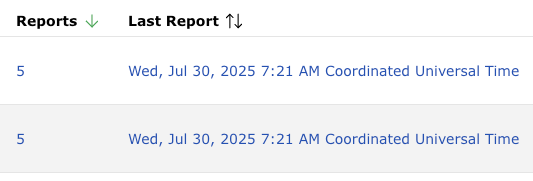
Рис. 10,5 Общее количество сохраненных отчетов и дата последнего отчета.¶
Для всех отчетов отображается следующая информация:
- Дата
Дата и время создания отчета.
- Статус
Статус соответствующей задачи.
- Задача
Соответствующая задача.
- Серьезность
Качественная мера серьезности уязвимостей согласно Общей системе обнаружения уязвимостей (CVSS) (см. главу) 13.2.3). Эта оценка серьезности, которая включает в себя число от 0,0 до 10,0, где 10,0 соответствует самой серьезной степени, а также серьезному классу, основанному на этом измерении:
Критический: 9,0–10,0
Высокий: 7,0–8,9
Средний: 4,0–6,9
Низкий: 0,1–3,9
Журнал: 0.0
Отображается серьезная серьезность.
- Критический/Высокий/Средний/Низкий/Лог/Ложное Поз.
Количество обнаруженных уязвимостей для каждого класса серьезности.
Для всех отчетов доступны следующие действия:
 Создайте дельта-отчет (см. главу 10.2.5).
Создайте дельта-отчет (см. главу 10.2.5).- Удалить отчет.
Примечание
Нажав Под списком отчетов можно удалить более одного отчета одновременно. Раскрывающийся список используется для выбора статей, которые необходимо удалить.
10.2.1 Чтение отчета¶
Нажмите на этот отчет, чтобы отобразить подробную информацию об отчете.
Доступны следующие вкладки:
- Информация
Общая информация о соответствующем скане.
- Результаты
Список всех результатов в этом отчете (см. главу 10.2.1.1).
- Хозяева
Сканированные хосты с именами хостов и IP-адресами. Обнаруживаются операционные системы, количество обнаруженных уязвимостей для каждой серьезной и минимальной серьезности, обнаруженная при сканировании.
- Порты
Сканированные порты с указанием имени порта, количества хостов и минимального уровня серьезности, обнаруженных при сканировании.
- Приложения
Просканированные приложения с приложениями CPE, количество хостов, количество результатов, которые были обнаружены в CPE, и значительная серьезность, обнаруженная при сканировании.
- Операционные системы
Сканированные операционные системы с указанием имени системы, имени хоста, количества сканируемых хостов и нижнего уровня серьезности, обнаруженного при сканировании.
- CVE
CVE обнаружены при сканировании.
- Закрытый CVE
CVE обнаружила первоначальные уязвимости, устранение которых уже было согласовано в ходе завершения.
- TLS-сертификаты
Сертификаты TLS, обнаруженные при сканировании.
- Сообщения об ошибках
Сообщения об ошибках, произошедших в случайное время.
- Пользовательские теги
Присвоенные теги (см. главу 7.4).
Содержимое отчета можно отсортировать по выбранному столбцу, щелкнув заголовок столбца. Содержимое можно отсортировать по возрастанию или убыванию:
 в заголовке столбца видно, что объекты отсортированы по возрасту.
в заголовке столбца видно, что объекты отсортированы по возрасту. в заголовке столбца видно, что объекты отсортированы по убыванию.
в заголовке столбца видно, что объекты отсортированы по убыванию.
В левом верхнем углу пульта доступны следующие действия:
- Ознакомьтесь с соответствующим главой руководства пользователя.
- Показать список страниц всех отчетов.
 Добавьте к активам критический отчет, имеющий QoD не менее 70 % и включенные переопределения.
Добавьте к активам критический отчет, имеющий QoD не менее 70 % и включенные переопределения. Удалите обязательный отчет о ресурсах.
Удалите обязательный отчет о ресурсах. Укажите соответствующую роль.
Укажите соответствующую роль. Открытая страница Результаты. Фильтр применяется только для отображения результатов данного отчета.
Открытая страница Результаты. Фильтр применяется только для отображения результатов данного отчета.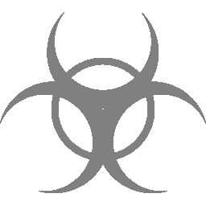
Открытая страница Уязвимости. Применен фильтр, чтобы показать только уязвимости для этого отчета. Открытая страница TLS-сертификаты. Фильтр применяется для отображения только сертификатов TLS для данного отчета.
Открытая страница TLS-сертификаты. Фильтр применяется для отображения только сертификатов TLS для данного отчета. Открытая страница Производительность. Отображается производительность системы на протяжении всего проекта.
Открытая страница Производительность. Отображается производительность системы на протяжении всего проекта. Загрузите отфильтрованный отчет (см. главу 10.2.2).
Загрузите отфильтрованный отчет (см. главу 10.2.2). Запустить оповещение для отправки отчета (см. главу) 10.2.4).
Запустить оповещение для отправки отчета (см. главу) 10.2.4).
10.2.1.1 Отчет о результатах¶
Вкладка Результаты содержит список всех уязвимостей, обнаруженных устройством (см. Рис. 10,6).
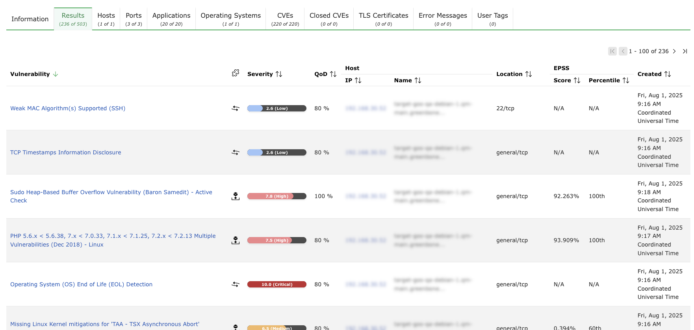
Рис. 10,6 Вкладка Результаты показ дисплея обнаруженных уязвимостей¶
Примечание
По умолчанию переопределения не применяются. Их можно применить, отфильтровав отчет (см. главу 10.2.1.3).
Для этого результата отображается следующая информация:
- Уязвимость
Название найденной уязвимости. При упоминании названия уязвимости приведите подробные сведения об уязвимостях (см. Рис. 10,7). На странице обнаружена уязвимость при открытии рабочей кнопки.
.Уязвимости, к которым прилагается примечание, отмечены значком
 .
.Уязвимости с прикрепленной заявкой отмечены значком
 .
.Уязвимости с переопределением отмечены значком
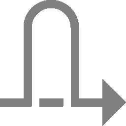
.
Примечание
Если столбец уязвимости по-прежнему отображается пустым, соответствующий VT не обновлен.
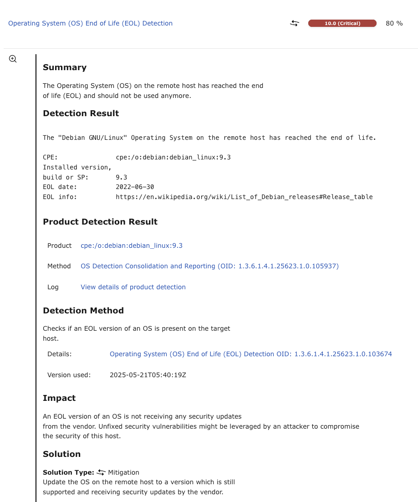
Рис. 10,7 Подробная информация об уязвимостях¶
- Тип решения

Тип мер по устранению уязвимостей. существуют следующие типы решений:
 Исправление поставщика: доступна информация об официальных исправлениях, выпущенном исходным поставщиком такого продукта.
Если не указано иное, укажите, что это исправление полностью учитывает уязвимость.
Исправление поставщика: доступна информация об официальных исправлениях, выпущенном исходным поставщиком такого продукта.
Если не указано иное, укажите, что это исправление полностью учитывает уязвимость. Обходной путь: доступная информация о конфигурации или конкретных файлах развертывания, которые можно использовать, чтобы избежать уязвимостей.
Обычно это «первая линия защиты» от новых уязвимостей до того, как они были выпущены или даже обнаружены меры по ее устранению или исправлению поставщика.
Обходной путь: доступная информация о конфигурации или конкретных файлах развертывания, которые можно использовать, чтобы избежать уязвимостей.
Обычно это «первая линия защиты» от новых уязвимостей до того, как они были выпущены или даже обнаружены меры по ее устранению или исправлению поставщика. Смягчение: доступна информация о конфигурации или заданных файлах развертывания, которая помогает снизить риск уязвимости, но не использует уязвимость в данном продукте.
Смягчение: доступна информация о конфигурации или заданных файлах развертывания, которая помогает снизить риск уязвимости, но не использует уязвимость в данном продукте. Не исправляет: исправлений уязвимостей нет и никогда не будет.
Это часто происходит, когда продукт теряет свою актуальность, больше не соответствует или устаревает иным образом.
Информация должна содержать подробную информацию о том, почему исправления не будут опубликованы.
Не исправляет: исправлений уязвимостей нет и никогда не будет.
Это часто происходит, когда продукт теряет свою актуальность, больше не соответствует или устаревает иным образом.
Информация должна содержать подробную информацию о том, почему исправления не будут опубликованы. Нет: в настоящее время исправлений нет.
Информация должна содержать подробную информацию о том, почему нет исправлений.
Нет: в настоящее время исправлений нет.
Информация должна содержать подробную информацию о том, почему нет исправлений.
- Серьезность
Качественная мера серьезности уязвимостей согласно Общей системе обнаружения уязвимостей (CVSS) (см. главу) 13.2.3). Эта оценка серьезности, которая включает в себя число от 0,0 до 10,0, где 10,0 соответствует самой серьезной степени, а также серьезному классу, основанному на этом измерении:
Критический: 9,0–10,0
Высокий: 7,0–8,9
Средний: 4,0–6,9
Низкий: 0,1–3,9
Журнал: 0.0
- QoD
Сокращение от «Качество обнаружения». QoD характеризует надежность выполненного обнаружения уязвимостей. Это значение от 0% до 100%, вариант 100% является наиболее надежным.
По умолчанию предоставлены только результаты, Обнаруженные VT с QoD 70 % или выше. Фильтр можно настроить для отображения результатов с более низким качеством QoD (см. главу 7.3.1).
Для получения дополнительной информации см. главу 10.2.6.
- Хозяин
Хост, для которого был найден результат. IP-адрес и имя хоста указываются отдельно.
- Расположение
Номер порта и тип протокола используются для обнаружения уязвимостей на хосте.
- ЭПСС
Мера вероятности использования уязвимостей в соответствии с системой оценки эксплойтов (EPSS) (см. главу 13.2.4).
Оценочные показатели уязвимости области использования, наблюдаемые в течение следующих 30 дней, представляют собой число от 0 до 1. Чем выше значение, тем больше опасений того, что уязвимость действительно будет использована.
Процент показывает долю уязвимостей, которые были оценены так же или ниже, чем уязвимость. Это помогает перенести счет в контекст.
- Созданный
Дата и время создания отчета.
10.2.1.2 Интерпретация отчета¶
Для достижения наилучших результатов обратите внимание на следующую информацию:
- Ложные разработки
Ложноположительный результат — это результат, описывающий проблему, которой на самом деле не существует. Сканеры уязвимостей часто находят доказательства, указывающие на уязвимость, но в конечном итоге вынести решение невозможно. Есть два случая:
Ложное внедрение: сообщение о серьезности уязвимости.
Ложноотрицательный результат: не сообщается о серьезных уязвимостях.
Поскольку пользователь может выявлять ложные разработки, управлять ими и использовать их по сравнению с ложноотрицательными, уязвимости сканера устройства сообщают обо всех существующих уязвимостях. Если пользователь знает, что существует ложное обучение, можно настроить переопределение (см. главу). 10.8).
- Некоторые результаты могут иметь одну и ту же причину.
Если установлен особенно старый пакет программного обеспечения, часто существует множество уязвимостей. Каждая из этих уязвимостей тестируется отдельным ВТ и появляется предупреждение. Установка актуального пакета устранит сразу множество уязвимостей.
- Критический , Высокий и средний
Выводы по классам тяжести Критический, Высокий и Середина являются наиболее необходимыми и должны решаться в приоритетном порядке. Прежде чем обратиться Середина выводы, Критический и Высокий выводы должны быть пересмотренными. От этого соединения следует отклоняться только в особых случаях, например, если известно, что выводы высокого уровня не следует учитывать, поскольку к сервису невозможно получить доступ через межсетевой экран.
- Низкий и журнал
Выводы по классам тяжести Низкий и Бревно в основном интересны для детального понимания. Эти результаты по умолчанию отфильтровываются, но могут сохранить очень интересную информацию. Их обработка повышает безопасность сетей и систем. Часто для их понимания требуется более глубокое знание приложений. Типично для результата с классом серьезности Бревно заключается в том, что сервис использует баннер со своим названием и номером версии. Это может быть полезно злоумышленнику, если в этой версии есть известная уязвимость.
- Аутентификация прошла успешно
При выполнении аутентифицированного неожиданно (см. главу 9.3), в отчете будет непосредственно указано, аутентификация прошла успешно. В Хозяева вкладка, Авторизация в столбце отображается одно из следующих значений:
При наведении электрода на значок отображается подсказка, какой сервис используется для аутентификации.


10.2.1.3 Фильтрация отчета¶
Поскольку отчет часто содержит большое количество результатов, можно отобразить и загрузить как полный отчет, так и только отфильтрованные результаты.
Отчет можно отфильтровать следующим образом:
Нажмите
в панели фильтров.Введите ключевое слово, где следует искать, в поле ввода. Фильтр (видеть Рис. 10,8).

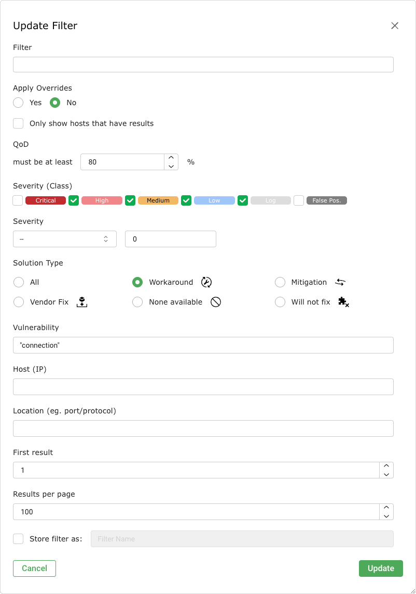
Рис. 10,8 Настройка фильтра для отчета¶
Для Применить переопределение выберите переключатель Да чтобы включить переопределение (см. главу 10.8).
Для Применить переопределение выберите переключатель Нет чтобы отключить переопределение.
Активируйте флажок Показывать только хосты, у которых есть результаты если только хосты с эффектом должны быть включены.
Для QoD выбранный желаемый QoD (см. главу 10.2.6).
Для Серьезность (класс) Активируйте флажки нужных классов серьезно.
Для Тип решения выберите переключатели нужных типов решений.
Введите имя (часть) уязвимости, хост или положение в соответствующем поле ввода.
Нажмите Обновлять.
10.2.2 Экспортный отчет¶
Поддерживаемые формы экспорта см. в главе. 10.1.
Отчет можно экспортировать следующим образом:
Выбирать Сканы > Отчеты в меню.
Нажмите на этот отчет, чтобы открыть страницу с описанием отчета.
Нажмите
.→ Откроется редактор сравнения отчетов о сканировании (см. Рис. 10,9).
Примечание
Примененный фильтр отображается в поле ввода. Фильтр результатов и не может быть изменено. Для замены фильтра см. главу 10.2.1.3.
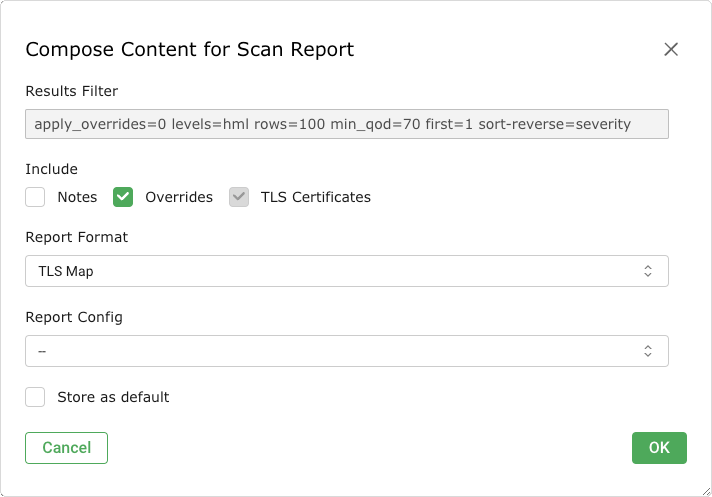
Рис. 10,9 Составление отчета об экспорте¶
Активируйте флажок Примечания для включения прикрепленных примечаний и установки флажка Переопределения чтобы пометить включенные переопределения и отключить их строгие текстовые поля.
Примечание
Переопределения наблюдения осуществляются только в том случае, если они включены при фильтрации отчета (см. главу 10.2.1.3).
Выберите формат отчета, раскрывающий входящий список. Формат отчета.
Если выбран настраиваемый формат отчета (Настраиваемые результаты CSV, Топология SVG, Веринице ИСМ или Веринице ISM все результаты), выберите конфигурацию отчета в раскрывающемся списке Отчет о конфигурации (см. главу 10.1.4).
Активируйте флажок Сохранить по умолчанию чтобы сохранить условия для будущего экспорта.
Нажмите ХОРОШО.
→ Отчет загружается в выбранном формате.

10.2.3 Отчет об импорте¶
Отчеты можно импортировать на устройство следующим образом:
Выбирать Сканы > Отчеты в меню.
Нажмите
 .
.Нажмите Просмотреть… и выберите XML-файл отчета (см. Рис. 10.10).
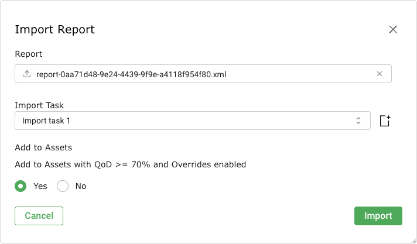
Рис. 10.10 Отчет об импорте¶
В раскрывающемся списке выберите задачу импорта, к которой необходимо добавить отчет. Импортировать задачу.
Кончик
Нажав
можно создать новую задачу по импорту (см. главу 9.5).Выберите переключатель Да чтобы добавить отчет в активы.
Нажмите Импорт.

10.2.4 Запуск оповещения об отчете¶
Частое оповещение включает в себя отправку отчета. Отчет, отправленный по оповещению, используется фильтру, расширену в компоновочных показателях оповещения (см. главу 9.12). При запуске оповещения для отчета добавляется второй фильтр, получающийся от составителя оценки отчета о сканировании (см. главу 10.2.2).
Оповещение можно активировать вручную следующим образом:
Выбирать Сканы > Отчеты в меню.
Нажмите на этот отчет, чтобы просмотреть результаты.
Отфильтруйте отчет так, чтобы отображались только те результаты, которые должны быть отправлены, с помощью Powerfilter (см. главу) 10.2.1.3) или выбрав вкладку.
Примечание
Фильтр, настроенный в компоновщике оценки предупреждений (см. главу 9.12) применяются иначе.
Чтобы имитировать поведение этого фильтра, настройте отчет фильтра таким образом, чтобы результаты не отфильтровывались.
Нажмите
.→ Откроется редактор сравнения отчетов о сканировании (см. Рис. 10,9).
Примечание
Примененный фильтр для отображения результатов отображается в поле ввода. Фильтр и не может быть изменено. Для замены фильтра см. главу 10.2.1.3.
Активируйте флажок Примечания для включения прикрепленных примечаний и установки флажка Переопределения чтобы пометить включенные переопределения и отключить их строгие текстовые поля.
Примечание
Переопределения наблюдения осуществляются только в том случае, если они включены при фильтрации отчета (см. главу 10.2.1.3).
Выберите оповещения раскрывающегося списка. Тревога.
Кончик
Новое оповещение можно создать, нажав кнопку
. Информация для ввода в поля ввода см. в главе. 9.12.Активируйте флажок Сохранить по умолчанию сохранить настройки для последующего отчета.
Нажмите ХОРОШО.
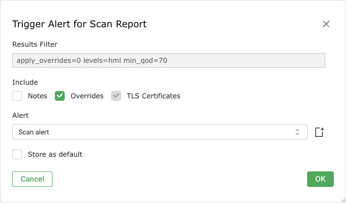
Рис. 10.11 Запуск оповещений вручную¶

10.2.5 Создание дельта-отчета¶
Если доступно более одного отчета по одной задаче (см. главу 10.2), дельта-отчет можно составить следующим образом:
Выбирать Сканирование > Задачи в меню.
Нажмите на общее количество отчетов в столбце Отчеты.
→ Страница Отчеты открыт. Применяется фильтр, позволяющий отображать только отчеты для выбранной задачи.
Выберите новый отчет, щелкнув
в столбце Действия нормальный отчет (см. Рис. 10.12).→ Значок
для дополнительного отчета неактивен.Рис. 10.12 Выбор первого отчета¶
Выберите старый отчет, щелкнув
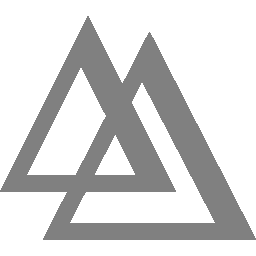
в столбце Действия нормальный отчет (см. Рис. 10.13).→ Отображается отчет о дельтах с состоянием дельты (см. Рис. 10.14) и могут быть экспортированы.
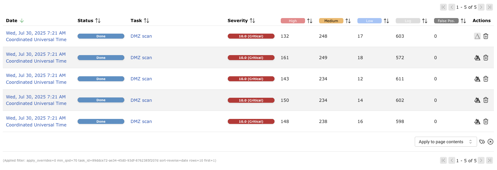
Рис. 10.13 Выбор второго отчета¶
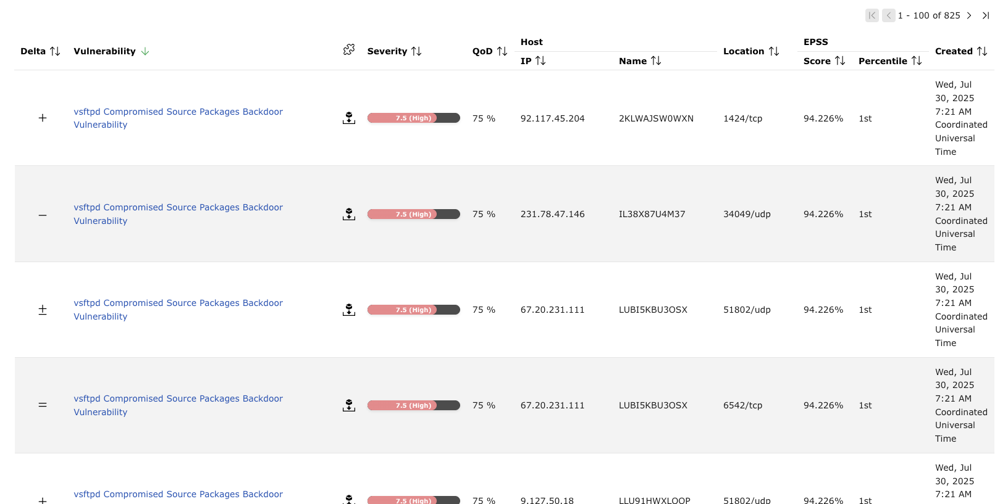
Рис. 10.14 Отчет о дельтах с дельта-результатами¶


Тип дельта-результата отображается в столбце Дельта. Существует четыре типа дельта-результатов:
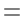
такой жеРезультат имеется в нижних отчетах и одинаках.


Терминал delta_states= в панели фильтров можно ввести, чтобы отображать только текущий тип дельта-результатов (см. главу 7.3).
delta_states=gпоказывает все результаты типа Ушел.delta_states=nпоказывает все результаты типа Новый.delta_states=sпоказывает все результаты типа такой же.delta_states=cпоказывает все результаты типа Измененный.
Кончик
Мы можем использовать несколько типов, например delta_states=gs показывает все результаты типа Ушел и такой же.
10.2.6 Концепция определения качества¶
Качество обнаружения (QoD) — это значение от 0 % до 100 %, описывающее надежность выполненного обнаружения уязвимостей или обнаружения продукта.
Хотя диапазон QoD позволяет довольно подробно описать качество, в большинстве тестов используется стандартная методология. Следовательно, определения QoD имеют значение QoD. Текущий список типов может со временем модифицироваться.
Примечание
Результат QoD «Обнаружение» выше, чем фактический результат «Уязвимость», поскольку он указывает качество самого обнаруживаемого продукта – который является надежным – а не качество классификационных тестов на уязвимости, которые могут быть ненадежными. по разным причинам (см. таблицу).
Всегда используется наименьший возможный QoD, например, в случае обнаружения несколькими методами (дистанционный или локальный/аутентифицированный).
QoD |
Тип QoD |
Описание |
|---|---|---|
100 % |
эксплуатировать |
Обнаружение произошло с помощью эксплойта и поэтому полностью проверено. |
99 % |
удаленный_вул |
Удаленные активные проверки (выполнение кода, обходная атака, SQL-инъекция и т. д.), при ответе которых четко показывает наличие уязвимости. |
98 % |
удаленное_приложение |
Удаленные активные проверки (выполнение кода, обход атаки, SQL-инъекция и т. д.), при ответе которых четко показано наличие уязвимого приложения. |
97 % |
упаковка |
Аутентифицированные пакеты проверок, например, для систем Linux(oid). |
97 % |
реестр |
Аутентифицированные проверки реестра для систем Microsoft Windows. |
95 % |
удаленный_активный |
Удаленные активные проверки (выполнение кода, обходная атака, SQL-инъекция и т. д.), при ответе которых показано вероятное наличие уязвимого приложения или уязвимости. «Вероятно» означает, что возможны лишь редкие обстоятельства, при обнаружении которых будут ошибочными. |
80 % |
удаленный_баннер |
Удаленная проверка баннеров приложений, которые обеспечивают уровень исправлений в версии. Многие запатентованные продукты делают это. |
80 % |
исполняемая_версия |
Аутентифицированная проверка версии исполняемого файла для систем Linux(oid) или Microsoft Windows, где приложение имеет уровень исправления в версии. |
75 % |
Если результаты обрабатываются без какой-либо информации QoD (например, при передаче данных из стационарной системы в пациентскую в настоящее время), им присваивается это значение. |
|
70 % |
удаленный_анализ |
Удаленные проверки, которые выполняют некоторый анализ, но не всегда могут быть полностью надежными в зависимости от условий окружающей среды. Для выяснения числа подозрительных ложноположительных или ложноотрицательных крайних случаев может быть проведен анализ со стороны пользователя (см. главу 10.8). |
50 % |
удаленный_зонд |
Удаленные проверки, при которых промежуточные системы, такие как брандмауэры, могут делать вид, что обнаружены правильно, так что на самом деле неясно, ответило ли само приложение. Например, это можно использовать для соединений без TLS. |
30 % |
Remote_banner_unreliable |
Удаленная проверка баннеров приложений, которые не обеспечивают уровень исправлений при выявлении версии. Например, это относится ко многим продуктам с открытым исходным кодом из-за исправления резервного копирования. |
30 % |
executable_version_unreliable |
Аутентифицированная проверка исполняемого файла для систем Linux(oid), где приложение не выявило уровня исправлений при идентификации версии. |
30 % |
package_unreliable |
Аутентифицированные пакеты проверок, которые не всегда полностью надежны, например, для систем Linux(oid). |
1 % |
Общие примечания |
Общее примечание о защищенной уязвимости без обнаружения какого-либо существующего применения. |
По умолчанию предоставлены только результаты, Обнаруженные VT с QoD 70 % или выше. Результаты, полученные с помощью теста с более низким QoD, склонны к ложноположительным результатам. Фильтр можно настроить для отображения результатов с более низким качеством QoD (см. главу 7.3.1).
Примечание
При подаче фильтра по умолчанию для отображения результатов, обнаруженных тестом с низким качеством QoD, вы сами несете ответственность за определение того, что является ложноположительным результатом.
10.3 Отображение всех имеющихся результатов¶
Страница списка
Хотя результаты отчета содержат только одно соединение, все результаты отображаются во внутренней базе данных, и их можно просмотреть, выбрав Сканирование > Результаты в меню.
Powerfilters можно использовать для отображения только интересных результатов (см. главу 7.3).

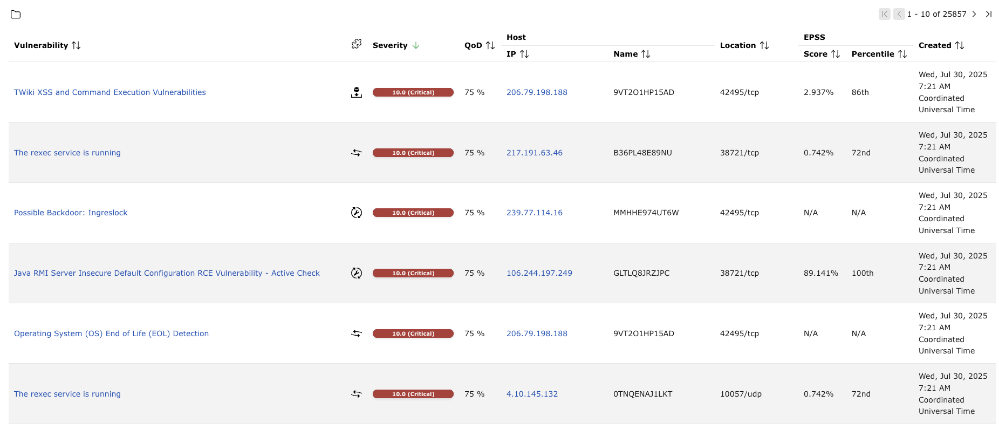
Рис. 10.15 Страница Результаты показ всех результатов всех сканирований¶
Для всех результатов отображается следующая информация:
- Уязвимость
Название найденной уязвимости.
Уязвимости, к которым прилагается примечание, отмечены значком
.Уязвимости с прикрепленной заявкой отмечены значком
.
Примечание
Если столбец уязвимости по-прежнему отображается пустым, соответствующий VT не обновлен.
Примечание
Несмотря на то, что результаты содержат много информации, внешние ссылки всегда включаются в детали. Они относятся к веб-сайтам, уязвимость которых уже обсуждалась. Доступна дополнительная справочная информация, например, о том, кто обнаружил уязвимость, какие последствия она может иметь и как ее можно устранить.
- Тип решения
Тип мер по устранению уязвимостей. существуют следующие типы решений:
- Исправление поставщика: доступна информация об официальных исправлениях, выпущенном исходным поставщиком такого продукта.
Если не указано иное, укажите, что это исправление полностью учитывает уязвимость.
- Обходной путь: доступная информация о конфигурации или конкретных файлах развертывания, которые можно использовать, чтобы избежать уязвимостей.
Обычно это «первая линия защиты» от новых уязвимостей до того, как они были выпущены или даже обнаружены меры по ее устранению или исправлению поставщика.
- Смягчение: доступна информация о конфигурации или заданных файлах развертывания, которая помогает снизить риск уязвимости, но не использует уязвимость в данном продукте.
- Не исправляет: исправлений уязвимостей нет и никогда не будет.
Это часто происходит, когда продукт теряет свою актуальность, больше не соответствует или устаревает иным образом.
Информация должна содержать подробную информацию о том, почему исправления не будут опубликованы.
- Нет: в настоящее время исправлений нет.
Информация должна содержать подробную информацию о том, почему нет исправлений.
- Серьезность
Качественная мера серьезности уязвимостей согласно Общей системе обнаружения уязвимостей (CVSS) (см. главу) 13.2.3). Эта оценка серьезности, которая включает в себя число от 0,0 до 10,0, где 10,0 соответствует самой серьезной степени, а также серьезному классу, основанному на этом измерении:
Критический: 9,0–10,0
Высокий: 7,0–8,9
Средний: 4,0–6,9
Низкий: 0,1–3,9
Журнал: 0.0
- QoD
Сокращение от «Качество обнаружения». QoD характеризует надежность выполненного обнаружения уязвимостей. Это значение от 0% до 100%, вариант 100% является наиболее надежным.
По умолчанию предоставлены только результаты, Обнаруженные VT с QoD 70 % или выше. Фильтр можно настроить для отображения результатов с более низким качеством QoD (см. главу 7.3.1).
Для получения дополнительной информации см. главу 10.2.6.
- Хозяин
Хост, для которого был найден результат. IP-адрес и имя хоста указываются отдельно.
- Расположение
Номер порта и тип протокола, необходимые для поиска результата на хосте.
- ЭПСС
Мера вероятности использования уязвимостей в соответствии с системой оценки эксплойтов (EPSS) (см. главу 13.2.4).
Оценочные показатели уязвимости области использования, наблюдаемые в течение следующих 30 дней, представляют собой число от 0 до 1. Чем выше значение, тем больше опасений того, что уязвимость действительно будет использована.
Процент показывает долю уязвимостей, которые были оценены так же или ниже, чем уязвимость. Это помогает перенести счет в контекст.
- Созданный
Дата и время создания отчета.
Примечание
Нажав под списком результатов можно экспортировать более одного результата одновременно. Раскрывающийся список используется для выбора внешних результатов.
Страница раскрыта
Нажмите на название результата, чтобы отобразить подробную информацию о результате.
Нажмите чтобы открыть страницу, сообщите о результате.
Доступны следующие вкладки:
- Информация
Общая информация о результате.
- Пользовательские теги
Присвоенные теги (см. главу 7.4).
В левом верхнем углу пульта доступны следующие действия:
- Ознакомьтесь с соответствующим главой руководства пользователя.
- Показать страницу со списком всех результатов.
- Экспортируйте результат в видео XML-файла.
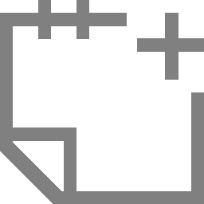
Сделайте новую заметку для результата (см. главу 10.7.1).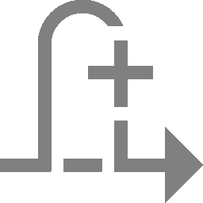
создать новое переопределение результата (см.главу 10.8.1).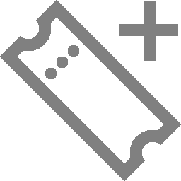
Создайте новый тикет для результата (см. главу 10.6.1).- Укажите соответствующую роль.
 Показать соответствующий отчет.
Показать соответствующий отчет.


10.4 Отображение всех существующих уязвимостей¶
Страница списка
Хотя отчеты содержат только уязвимости одного кабеля, все уязвимости указаны во внутренней базе данных, и их можно просмотреть, выбрав Сканирование > Уязвимости в меню.
Powerfilters можно использовать для отображения только интересных уязвимостей (см. главу 7.3).

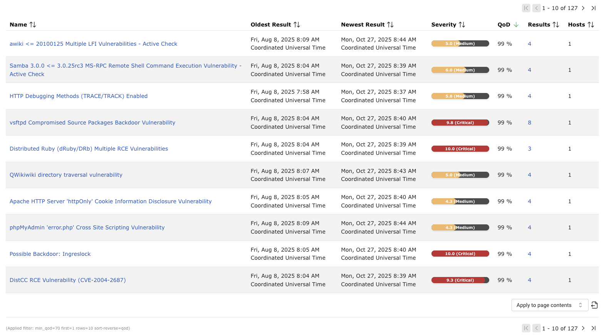
Рис. 10.16 Страница Уязвимости показ всех уязвимостей всех сканирований¶
По всем уязвимостям отображается следующая информация:
- Имя
Название уязвимости.
- Самый старый результат
Дата и время самого предыдущего результата, обнаруженного для уязвимости.
- Новейший результат
Дата и время последнего результата, обнаруженного для уязвимости.
- Серьезность
Качественная мера серьезности уязвимостей согласно Общей системе обнаружения уязвимостей (CVSS) (см. главу) 13.2.3). Эта оценка серьезности, которая включает в себя число от 0,0 до 10,0, где 10,0 соответствует самой серьезной степени, а также серьезному классу, основанному на этом измерении:
Критический: 9,0–10,0
Высокий: 7,0–8,9
Средний: 4,0–6,9
Низкий: 0,1–3,9
Журнал: 0.0
- QoD
Сокращение от «Качество обнаружения». QoD характеризует надежность выполненного обнаружения уязвимостей. Это значение от 0% до 100%, вариант 100% является наиболее надежным.
По умолчанию предоставлены только результаты, Обнаруженные VT с QoD 70 % или выше. Фильтр можно настроить для отображения результатов с более низким качеством QoD (см. главу 7.3.1).
Для получения дополнительной информации см. главу 10.2.6.
- Результаты
Количество результатов, найденных для данной уязвимости. При необходимости на странице количества результатов Результаты открыт. Применяется фильтр, чтобы отображать только результаты для выбранной уязвимости.
Примечание
Нажав под списком результатов можно экспортировать более одного результата одновременно. Раскрывающийся список используется для выбора внешних результатов.
Страница раскрыта
Нажмите на название уязвимости, чтобы открыть страницу об уязвимостях.
В левом верхнем углу пульта доступны следующие действия:
- Ознакомьтесь с соответствующим главой руководства пользователя.
- Показать страницу со списком всех уязвимостей.
- Экспортируйте уязвимости в виде XML-файла.
Сделайте новую заметку об уязвимости (см. главу 10.7.1).
создать новое переопределение уязвимостей (см. главу 10.8.1).
- Покажите соответствующие результаты.
10.5 Тенденция уязвимостей¶
Если задача запускалась несколько раз, на странице отображается динамик обнаруженных уязвимостей. Задачи (видеть Рис. 10.17).

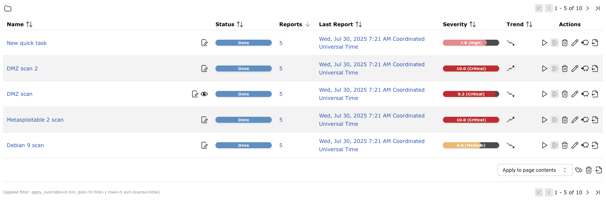
Рис. 10.17 Задача с трендом¶
Чтобы попасть туда, выберите Сканирование > Задачи в меню.
Определение описывает изменения уязвимостей между самым новым и вторым по времени отчетом. Оно отображается в столбце Тренд.
Возможны следующие изменения:
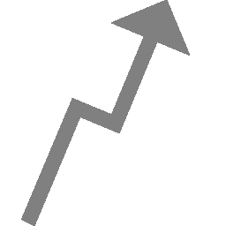
В новейшем отчете самая высокая серьезность выше, чем самая серьезная высокая степень во втором новейшем отчете. Самый высокий уровень серьезности одинаков для верхних отчётов. Однако последний отчет содержит больше проблем безопасности, чем второй новейший отчет.
Самый высокий уровень серьезности одинаков для верхних отчётов. Однако последний отчет содержит больше проблем безопасности, чем второй новейший отчет.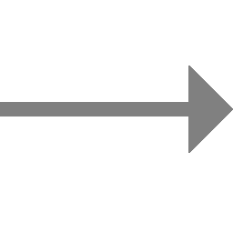
Наивысшая серьезность и количество проблем безопасности одинаковы для обоих взглядов.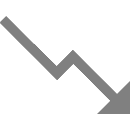
Самый высокий уровень серьезности одинаков для верхних отчётов. Однако последний отчет содержит меньше проблем безопасности и такой серьезности, чем второй новейший отчет.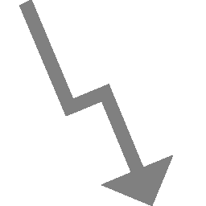
В новейшем отчете самая высокая серьезность ниже, чем самая серьезная высокая степень во втором новейшем отчете.


10.6 Использование билетов¶
Билеты на исправление используются для устранения обнаруженных уязвимостей. Билеты могут быть назначены текущему пользователю или другому пользователю. Вся ценная информация, необходимая для понимания и решения проблем, связана непосредственно с ней и доступна назначенному пользователю. Кроме того, статус заявок помогает контролировать прогресс.
Оповещения могут быть назначены для определенных событий, обязательств с заявками, например, изменения в соответствии с заявленными требованиями.
Система управления заявками способна автоматически подать сигнал повторного сканирования, чтобы убедиться, что проблема решена.
Примечание
При подаче заявки другому пользователю этот пользователь получает доступ для чтения и записи заявок. Кроме того, пользователь автоматически получает доступ для чтения соответствующих задач, ее отчетов и результатов.
Если пользователю отозвано назначение тикета, доступ к чтению задачи и отчеты сохраняются. Права на задачу можно проверить и отозвать на странице описание проблемы (см. главу). 9.8). Если для результатов одного и того же отчета подготовлено несколько заявок и назначено один и тот же потребитель, одно и то же решение выносится несколько раз.
Если заявка на правопреемник изменена, новый правопреемник не получает автоматический доступ для чтения задачи. Вместо этого владелец заявки должен изменить разрешение на странице с описанием проблемы (см. главу). 9.8) и обеспечить новому правопреемнику доступ к чтению.
10.6.1 Создание заявок¶
Билет можно создать следующим образом:
Выбирать Сканы > Отчеты в меню и нажмите на надпись «Отчет», чтобы отобразить результаты.
Нажмите на элемент в столбце Уязвимость и
чтобы открыть страницу, сообщите о результате.или
Выбирать Сканирование > Результаты в меню.
Нажмите на элемент в столбце Уязвимость и
чтобы открыть страницу, сообщите о результате.Чтобы раскрыть список выбранных пользователей, должен быть назначен билет. Назначить пользователя (видеть Рис. 10.18).
Введите примечание к билету в поле ввода. Примечание.
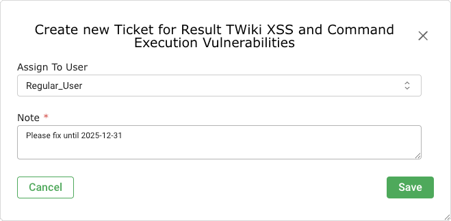
Рис. 10.18 Создание нового билета¶
Нажмите Сохранять.
→ Количество билетов в результате отображается в нижней части верхней страницы с указанием результата (см. Рис. 10.19). Нажав
представляют соответствующие билеты.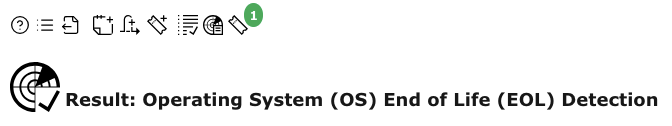
Рис. 10.19 Количество назначенных билетов¶


10.6.2 Изменение решения заявки¶
Билет может иметь следующий статус:
Открыто: уязвимость до сих пор не устранена.
Исправлено: уязвимость устранена.
Исправление проверено: задача была запущена повторно, и большая уязвимость не обнаружена. Этот статус устанавливается автоматически.
Закрыто: исправление уязвимости подтверждено или билет больше не требуется.
Статус билета можно изменить следующим образом:
Выбирать Стабильность > Билеты на исправление в меню.
В строке билета нажмите
.Выберите новый статус раскрывающегося списка. Статус (видеть Рис. 10.20).
При раскрытии выбора выбранного пользователя должен быть установлен билет с новым статусом. Назначенный пользователь.
Введите примечание к новому статусу в соответствующем поле ввода.
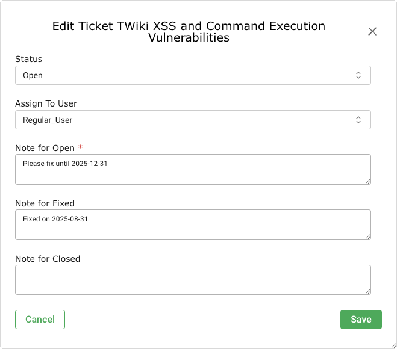
Рис. 10.20 Изменение стоимости билета¶
Нажмите Сохранять.

10.6.3 Установка оповещений о заявке¶
Оповещения о билетах можно настроить для следующих мероприятий:
Получите новый билет.
Изменился статус назначенного билета.
Изменился статус собственного билета.
Оповещение о билетах на признание следующим образом:
Выбирать Конфигурация > Оповещения в меню.
создать новое оповещение, кнопки
.Определите предупреждение (см. Рис. 10.21).
Нажмите Сохранять.
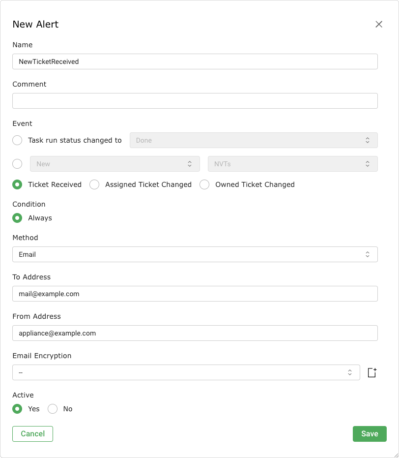
Рис. 10.21 Установка оповещений о билете¶

Можно определить следующие данные оповещения:
- Имя
Определение имени. Имя можно выбрать произвольно.
- Комментарий
Необязательный комментарий может оставить дополнительную информацию.
- Событие
Выбирать Билет получен если оповещение должно быть отправлено, когда будет назначен новый билет.
Выбирать Назначенный билет изменен необходимо ли подавать оповещение при внесении внесенного вам билета.
Выбирать Принадлежащий билет изменен следует подавать сигналы тревоги при оказании помощи со стороны специального оператора.
- Метод
Выбор метода оповещения. Для каждого оповещения можно выбрать только один метод.
Если для одного и того же события должны быть активированы разные оповещения, необходимо создать несколько оповещений и связать их с одной и той же группой.
Возможные следующие методы:
- Электронная почта
По указанному адресу отправить электронное письмо.
Передача электронной почты может быть зашифрована с использованием настраиваемого ключа S/MIME или GPG. Шифрование можно выбрать в раскрывающемся списке. Шифирование электронной почты или созданные с помощью нажатия кнопки
.- Начать задачу
Оповещение может запустить дополнительную задачу. Задача, которую вы выбираете из выпадающего списка Начать задачу.
- Системный регистратор
Предупреждение отправки демону системного журнала.
Сервер системного журнала Определяется с помощью консоли (см. главу 6.2.12).
10.6.4 Управление заявками¶
Страница списка
Все выходящие билеты можно отобразить, выбрав Стабильность > Билеты на исправление в меню.
По всем билетам отображается следующая информация:
- Уязвимость
Уязвимость, для которой создан билет.
- Серьезность
Серьезность уязвимости, для которой создан билет.
- Хозяин
Хост, на котором была обнаружена уязвимость.
- Тип решения
Тип решения уязвимости, для которого создан тикет.
- Назначенный пользователь
Пользователь, назначенный билет.
- Модификация времени
Дата и время последней модификации билета.
- Статус
Статус билета.
Для всех билетов доступны следующие действия:
- Переместите билет в мусорную корзину. Выбросить билет в мусорное ведро может только владелец.
- Отредактируйте билет.
- Клонируйте билет.
Примечание
Нажав или под списком билетов можно одновременно переместить в корзину или экспортировать более одного билета. Раскрывающийся список используется для выбора билетов, которые будут перенесены в корзину или экспортированы.
Страница раскрыта
Нажмите на название билета, чтобы отобразить подробную информацию о билете.
Нажмите чтобы открыть страницу, сообщите о билете.
Доступны следующие вкладки:
- Информация
Общая информация о билетах.
- Пользовательские теги
Присвоенные теги (см. главу 7.4).
В левом верхнем углу пульта доступны следующие действия:
- Ознакомьтесь с соответствующим главой руководства пользователя.
- Показать страницу со списком всех билетов.
- Клонируйте билет.
- Отредактируйте билет.
- Переместите билет в мусорную корзину. Выбросить билет в мусорное ведро может только владелец.
- Экспортируйте билет в видео XML-файла.
10.7 Использование заметок¶
Примечания разрешить внести дополнения к ВТ, а также указать в отчетах. Примечание можно добавить к конкретному результату, задаче, серьезности, порту или хосту, и поэтому он будет использоваться только в определенных отчетах. Заметку также можно обнародовать, чтобы она отображалась во всех отчетах.
10.7.1 Создание заметки¶
10.7.1.1 Создание заметок с помощью результата¶
Заметки можно создавать другими методами. Самый простой способ — через соответствующий результат в отчете:
Выбирать Сканы > Отчеты в меню.
Нажмите на этот отчет, чтобы просмотреть результаты.
Выберите вкладку Результаты.
Нажмите на результат в столбце Уязвимость.
Нажмите
чтобы открыть страницу, сообщите о результате.Определите примечание (см. Рис. 10.22).
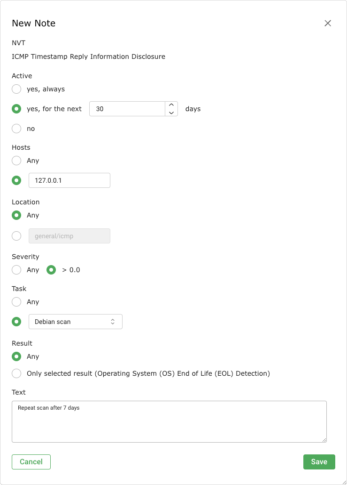
Рис. 10.22 Создание новой заметки¶
Можно ввести эту информацию:
Примечание
Если заметка произошла внезапно, некоторые настройки уже заполнены.
- НТВ
ВТ, к этому применить примечание.
- Активный
Выбор, следует ли активировать заметку. Также возможна активация на определенное количество дней.
- Хозяева
Хост или диапазон хостов, для которых необходимо найти результат, чтобы применить примечание.
Кончик
Можно ввести различные IP-адреса и CIDR-блоки. Таким образом, можно создавать заметки для целых подсетей без необходимости вести каждый хост в разделенном запятом списке.
Увеличение количества хостов указывает на минусы, например
198.168.1.1-198.168.1.25. Диапазон больше 4096 не имеет значения.- Расположение
Порт, для которого необходимо найти результат, применить примечание. Для каждой заметки используются только следующие значения:
Обстановка Любой.
Конкретный порт перехода в виде числа, за которым следует
tcpилиudp.Неопределенный порт, указанный в тексте
общий/TCP.Неопределенный порт, указанный в тексте
упаковка.
- Серьезность
Диапазон степени ЖТ, к которому следует применять примечание.
- Задача
Выбор задачи, для которой следует применить заметку.
- Результат
Выбор результатов, к которым следует применять примечание.
Примечание
Радиокнопка Любой необходимо выбрать, если примечание будет применено к отчетам в будущем.
- Текст
Текст, описывающую заметку, более подробно.
Нажмите Сохранять.
→ Примечание отображается на странице с описанием результата (см. Рис. 10.23).


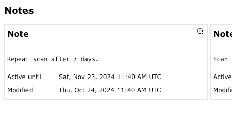
Рис. 10.23 Отчет с примечанием¶
10.7.1.2 Создание заметки на странице Примечания¶
Заметки можно создавать на странице. Примечания также:
Выбирать Сканы > Заметки в меню.
создайте новую заметку, кнопку
.Введите идентификатор виртуального терминала в поле ввода. НВТ ОИД.
Дайте определение заметке.
Кончик
В поле ввода можно ввести диапазоны IPресов и CIDR-блоков. Хозяева. Таким образом, можно создавать заметки для целых подсетей без необходимости вести каждый хост в разделенном запятым списке.
Примечания можно обобщить, выбрав переключатель Любой для хостов, местположений, серьезности, задач или результатов.
Нажмите Сохранять.
10.7.2 Управление заметками¶
Страница списка
Все возможные заметки можно отобразить, выбрав Сканы > Заметки в меню (см. Рис. 10.24).

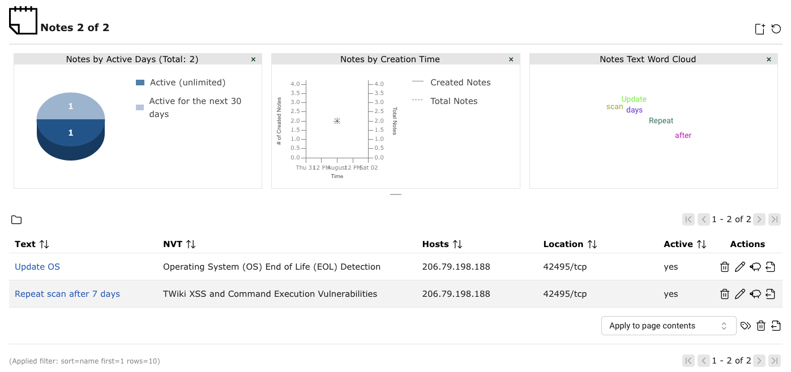
Рис. 10.24 Управление заметками¶
Для всех заметок доступны следующие действия:
- Переместите заметку в корзину.
- Отредактируйте заметку.
- Клонируйте заметку.
- Экспортируйте заметку в видео XML-файла.
Примечание
Нажав или под списком заметок можно одновременно переместить в корзину или экспортировать более одной заметки. Раскрывающийся список используется для выбора, какие заметки перемещаются в корзину или экспортируются.
Страница раскрыта
Нажмите на название заметки, чтобы отобразить подробную информацию о заметке.
Нажмите чтобы открыть страницу, раскрывайте о заметке.
Доступны следующие вкладки:
- Информация
Общая информация о заметке.
- Пользовательские теги
Присвоенные теги (см. главу 7.4).
- Разрешения
Назначенные разрешения (см. главу 8.4).
В левом верхнем углу пульта доступны следующие действия:
- Ознакомьтесь с соответствующим главой руководства пользователя.
- Показать страницу списка всех заметок.
- Создайте новую заметку (см. главу 10.7.1).
- Клонируйте заметку.
- Отредактируйте заметку.
- Переместите заметку в корзину.
- Экспортируйте заметку в видео XML-файла.
10.8 Использование переопределений и ложных результатов¶
Серьезность результата можно изменить. Это называется переопределением.
Переопределение полезно, особенно для результатов управления, которые обнаружены как ложноположительные и имеют высокий уровень серьезности, но в будущем ему будет присвоен другой уровень серьезности.
То же самое относится и к результатам, которым присвоена только степень серьезности. Бревно но на внешнем уровне ему следует присвоить более высокий уровень серьезности. Этим также можно управлять с помощью переопределения.
Переопределения также используются для управления приемлемыми рисками.
10.8.1 Создание переопределения¶
10.8.1.1 Создание переопределения с помощью результата быстрого¶
Переопределение можно создавать другими методами. Самый простой способ — через соответствующий результат в отчете:
Выбирать Сканы > Отчеты в меню.
Нажмите на этот отчет, чтобы просмотреть результаты.
Выберите вкладку Результаты.
Нажмите на результат в столбце Уязвимость.
Нажмите
чтобы открыть страницу, сообщите о результате.Определите переопределение. Выберите серьезность раскрытия входящего списка. Новая серьезность (видеть Рис. 10.25).
Альтернативно можно создать собственную серьезность. Приводятся только числа от 0,0 до 10,0 с максимум одним десятичным знаком и точкой в качестве десятичного разделителя.
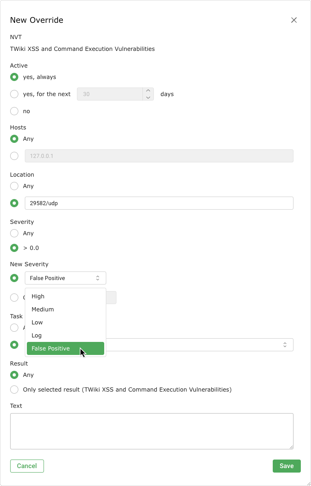
Рис. 10.25 Создание нового переопределения¶
Можно ввести эту информацию:
Примечание
Если переопределение происходит внезапно, некоторые настройки уже заполнены.
- НТВ
VT, для которого применяется переопределение.
- Активный
Выбор, следует ли активировать переопределение. Также возможна активация на определенное количество дней.
- Хозяева
Хост или диапазон хостов, для которых необходимо найти результат, чтобы применить переопределение.
Кончик
Можно ввести различные IP-адреса и CIDR-блоки. Таким образом, можно создавать переопределения для целых подсетей без необходимости вести каждый хост в разделенном запятом списке.
Увеличение количества хостов указывает на минусы, например
198.168.1.1-198.168.1.25. Диапазон больше 4096 не имеет значения.Примечание
Если результат соответствует нескольким переопределениям, например одно переопределение для хостов сети, а другое — для хоста в данном случае, примените более конкретное переопределение (в зависимости от результата, задачи, порта и серьезности). Если результат соответствует нескольким таким конкретным переопределениям, примените последнее созданное переопределение.
- Расположение
Порт, для которого необходимо найти результат, применить переопределение. Для каждого переопределения используются только следующие значения:
Обстановка Любой.
Конкретный порт перехода в виде числа, за которым следует
tcpилиudp.Неопределенный порт, указанный в тексте
общий/TCP.Неопределенный порт, указанный в тексте
упаковка.
- Серьезность
Увеличьте серьезности ЖТ, для чего следует применить корректирующие действия.
- Новая серьезность
Уровень серьезности, который должен иметь ТН после применения переопределения.
Класс серьезности можно выбрать из раскрывающегося списка. В зависимости от серьезности класса предопределена новая серьезность:
Критический: 10,0
Высокий: 7,0
Средний: 5,0
Низкий: 2,0
Журнал: 0.0
Ложное внедрение
Альтернативно в поле ввода можно ввести новую серьезность. Другой. Только цифры между
0.0и10.0Максимум один десятичный знак и точка в качестве десятичного разделителя.- Задача
Выбор задач, для которых следует применить переопределение.
- Результат
Выбор результатов, к которым следует применять переопределение.
Примечание
Радиокнопка Любой необходимо выбрать, если переопределение будет применено к отчетам в будущем.
- Текст
Текст, описывающее переопределение более подробно.
Нажмите Сохранять.

Примечание
Если к одному и тому же ТН в одном отчете применяется несколько переопределений, применяется и применяется самое последнее переопределение.
10.8.1.2 Создание переопределения на странице Переопределения¶
Переопределения можно создать на странице. Переопределения также:
Выбирать Сканирование > Переопределения в меню.
создадим новое переопределение, щелкнув
.Введите идентификатор виртуального терминала в поле ввода. НВТ ОИД.
Определите переопределение.
Примечание
Информация для ввода в поля ввода см. в главе. 10.8.1.1.
Выберите серьезность раскрытия входящего списка. Новая серьезность.
Альтернативно в поле ввода можно ввести новую серьезность. Другой. Только цифры между
0.0и10.0Максимум один десятичный знак и точка в качестве десятичного разделителя.Нажмите Сохранять.
10.8.2 Управление переопределениями¶
Страница списка
Все варианты переопределения можно отобразить, выбрав Сканирование > Переопределения в меню.
Для всех переопределений доступны следующие действия:
- Переместите переопределение в корзину.
- Отредактируйте переопределение.
- Клонировать переопределение.
- Экспортируйте переопределение в видео XML-файла.
Примечание
Нажав или под списком переопределений можно переместить в корзину или экспортировать более одного переопределения одновременно. Раскрывающийся список используется для выбора того, какие переопределения перемещаются в корзину или экспортируются.
Страница раскрыта
Нажмите на название переопределения, чтобы отобразить подробную информацию о переопределении.
Нажмите чтобы открыть страницу, о переопределении.
Доступны следующие вкладки:
- Информация
Общая информация о переопределении.
- Пользовательские теги
Присвоенные теги (см. главу 7.4).
- Разрешения
Назначенные разрешения (см. главу 8.4).
В левом верхнем углу пульта доступны следующие действия:
- Ознакомьтесь с соответствующим главой руководства пользователя.
- Показать список всех переопределений.
- создать новое переопределение (см. главу 10.8.1).
- Клонировать переопределение.
- Отредактируйте переопределение.
- Переместите переопределение в корзину.
- Экспортируйте переопределение в видео XML-файла.
10.8.3 Отключение и включение переопределений¶
Если при переопределении настраиваются параметры результатов, их можно включить или отключить.
Это делается путем установки фильтра следующим образом:
Нажмите
в панели фильтров.Для Применить переопределение выберите переключатель Да чтобы отключить переопределение.
Для Применить переопределение выберите переключатель Нет чтобы отключить переопределение.
Нажмите Обновлять.
Кончик
Переопределения можно помечать в экспортированных отчетах (см. главу) 10.2.2).